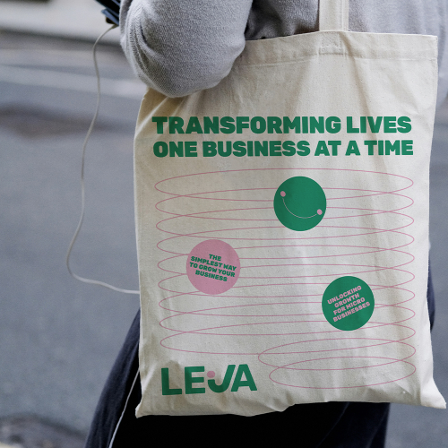
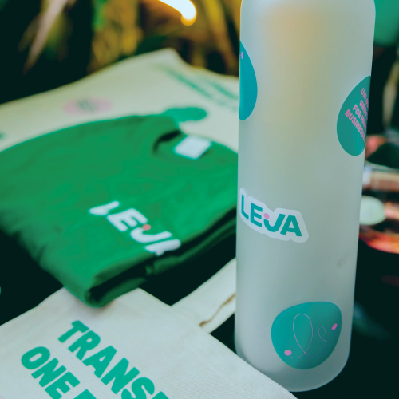
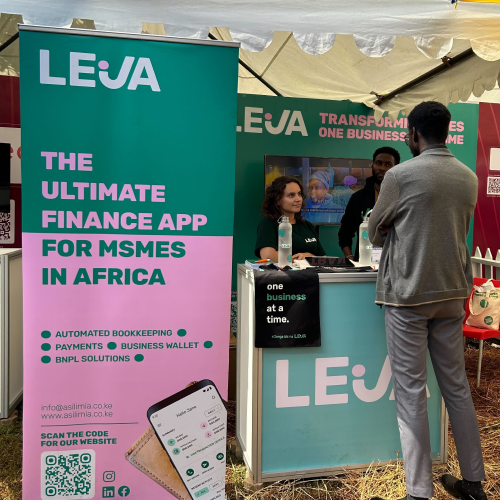

Azadi's Resume
Professional Experience
Product Designer
Leja Ltd.
Nov '22 - Present
- Conducted user research to assess target market and understand customer behaviour, needs, and pain points through surveys and interviews.
- Collaborated with product managers, developers, and marketers to define and implement innovative design solutions that align with product goals.
- Created wireframes, mockups, and responsive prototypes to visualise design solutions for mobile applications, websites, and web dashboards.
- Iterated on designs based on usability testing feedback to continuously improve the user experience.
- Created and maintained the Leja design system and component libraries to ensure consistency and efficiency across all products.
- Designed interactive partnership presentations and product demos using MS Office, GSuite, Figma and Adobe Creative Suite.
- Championed accessibility and usability best practices by referencing WCAG guidelines
- Maintain clear documentation of design processes, decisions, and guidelines to ensure transparency and consistency.


Design Associate
Leja Ltd.
Feb '22 - Oct '22
- Designed templates for internal and external documents e.g. letterheads, invoices and presentation decks.
- Collaborated with print suppliers to created brand-aligned print merchandise for customers, partners, events and the internal team e.g. signage, posters, apparel, packaging and stationery.
- Expanded on existing brand-aligned static and motion graphics templates for social media marketing.
- Supported marketing teams with script-writing and production for promotional assets.
- Led and participated in brainstorms on visual storytelling to achieve business goals, partnership expectations and user needs.
- Organised a repository of visual assets for easy access, including photos, videos, branding graphics, event collateral, pitch decks, partnership proposals and social media posts.



Freelance Editorial Designer
UNFCCC High-Level Champions
Sep '24
- Designed a 14-page publication to be presented at the Summit of The Future 2024 using the established Adobe InDesign template and styleguide.
- Collaborated with the in-house team to adapt to content changes and layout corrections.
Freelance Editorial Designer
InABLE
May '24
- Designed the 36-page accessible conference booklet for the Inclusive Africa Conference 2024.
- Collaborated with in-house accessibility consultants to review and update the accessibility requirements of print versions.
- Supported the lead designer with event branding and signage.
Freelance Editorial Designer
Children & Youth Pavilion, COP27
Dec '22 - Jan '23
- Designed the 47-page event report for the Children & Youth Pavilion at COP27 Summit in Egypt.
- Collaborated with the rapporteur to ensure the report visuals and layout highlighted major achievements, recommendations and resources from the event.
Freelance Editorial Designer
Society for International Development
Oct '21 - Nov '21
- Designed the 301-page compilation of collaborative research into contemporary Kenyan energy concerns.
- Collaborated with editors to align graphics to industry-relevant narratives and highlight key calls to action.
- Adapted designs for both web-viewing and high-quality print by working closely with printers.